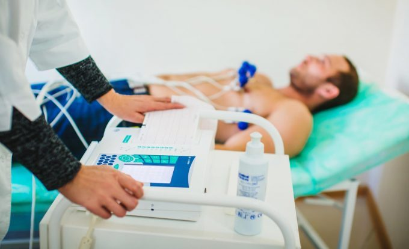

Internistički pregled sa savremenim EKG aparatom po promotivnoj ceni!
Lekar internista: Dr Biljana Đorđević, specijalista interne medicine
Pregled podrazumeva sledeće:
razgovor sa pacijentom (anamneza);
uvid u prethodnu medicinsku dokumentaciju (ako postoji);
fizikalni pregled po organima i sistemima;
merenje krvnog pritiska i pulsa;
EKG snimanje i interpretaciju zapisa;
preporuku za eventualnu dodatnu dijagnostiku i
savet i preporuku terapije.

NAPOMENA! Internistički pregled je neophodan kod pojave zdravstvenih tegoba (ili u sklopu predoperativne obrade pacijenta), ali je istovremeno izuzetno važan deo sistematskog, odnosno, preventivnog pregleda.
***
Naša ordinacija se nalazi u Sremčici, Beogradska 14
Telefoni za zakazivanje pregleda su: 011/25-27-428 i 064/28-61-842
***
Od srca vam želimo dobro zdravlje!
Ginekologija
Preporuka je da svaka žena bar jednom godišnje uradi ginekološki ultrazvuk!
Ginekolozi koriste ultrazvuk za pregled uterusa, bešike, jajovoda i jajnika. Inače, ovom dijagnostičkom metodom mogu da se otkriju ciste, dobroćudni miomi ili zloćudni tumori.
Ginekolozi su saglasni da je svaka žena starosti iznad 50 godina, odnosno, svaka žena starosti iznad 30 godina - ukoliko postoji porodična istorija oboljenja I i II stepena krvnog srodstva - izložena većem riziku od kancera jajnika.
U svakom slučaju, ginekološki ultrazvuk se neizostavno preporučuje kod sledećih stanja:
Bola u maloj karlici;
Neredovnih, bolnih ciklusa i obilnih krvarenja ili izostanka ciklusa;
Praćenja rasta mioma materice i veličine i izgleda cista na jajnicima;
Za ispitivanje izgleda i veličine materice i jajnika;
Za praćenje rasta folikula i debljine sluzokože materice u toku tretmana steriliteta;
Za dijagnozu i potvrdu trudnoće (eventualno vanmaterične trudnoće) i dalje praćenje toka trudnoće.
NAPOMENA: Da bi pregled bio što tačniji i efikasniji pacijent mora da sluša savete ginekologa i izvrši adekvatne prepreme neposredno pre pregleda!
***
Ginekološki ultrazvuk dostupan je i u našoj Ordinaciji! Pregled vrše iskusni lekari specijalisti ginekologije i akušerstva.
***
Od srca vam želimo dobro zdravlje!
Sedam koraka za sprečavanje širenja virusa
Preporuke Svetske zdravstvene organizacije
Redovno perite ruke
Nemojte dodirivati oči, usta i nos
Pokrijte usta i nos savijenim laktom ili maramicom
Izbegavajte mesta sa mnogo ljudi
Ostanite kod kuće ako imate temperaturu ili kašljete
Ako imate temperaturu i otežano dišete obratite se lekaru, ali prvo putem telefona
Pratite informacije svetske zdravstvene organizacije